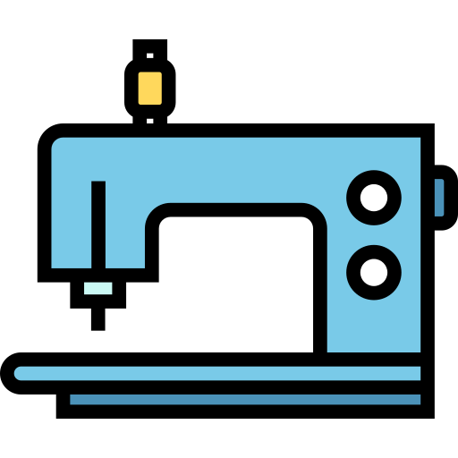
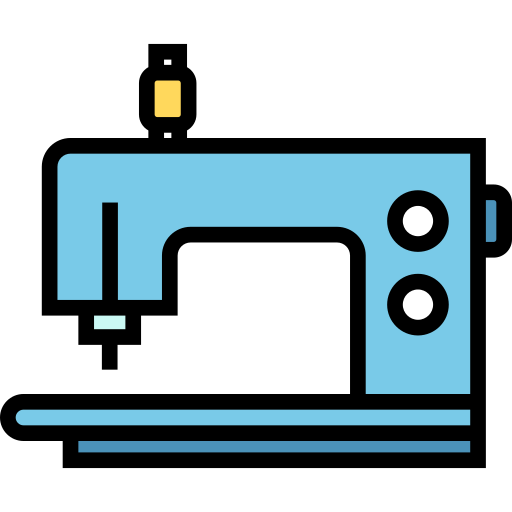
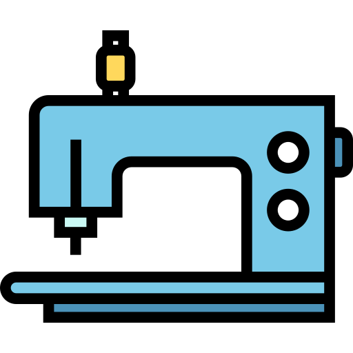
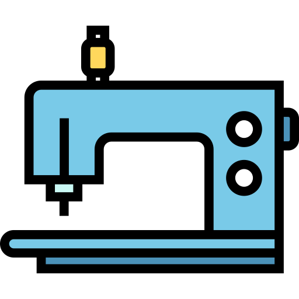

I'm Disha
An Engineer
 



.png)
.png)
I started drawing mandalas during my summer holidays after 12th grade. When I intailly started making them it was just random designs on a piece of paper later I discovered that they are termed as mandalas and zentangales. A mandala (Sanskrit: मण्डल, romanized: maṇḍala, lit. 'circle', [ˈmɐɳɖɐlɐ]) is a geometric configuration of symbols. A mandala generally represents the spiritual journey, starting from outside to the inner core, through layers. click here to view some of my works on mandalas


I did my engineering in GSSS institue of engineering and technology for women. Athough my majors was in electronics and instrumentation I have seemed to develop a keen interest towards computer science. I have managed to gain knowleadge in certain subjects of computer science such as networking, C programming, C++, DBMS, HTML5 and CSS3.
I learnt stiching from my mother who learnt it from her mother my gardmother had done a diploma in stiching. I still a learner in it I have managed to design some of my own clothes and would love to improve myself and learn alot in stiching. I like anything that involves creativity and designing definatly does. “Fashion is the most powerful art there is. It’s a movement, design, and architecture all in one. It shows the world who we are and who we’d like to be.”
Last but not the least, one of my favroite skill- Drama . I have always loved being dramatic in life because it makes life so much more entertaning. I was in 3rd grade when I watched a bollywood moive named "Jab we met" and I love the role of kaneena kapoor so much in it that I practiced every single dailog of her's and I used to act it infront of my sister and my sister told me how good I was at it and since then I always wanted to become an actress.
CONTACT ME